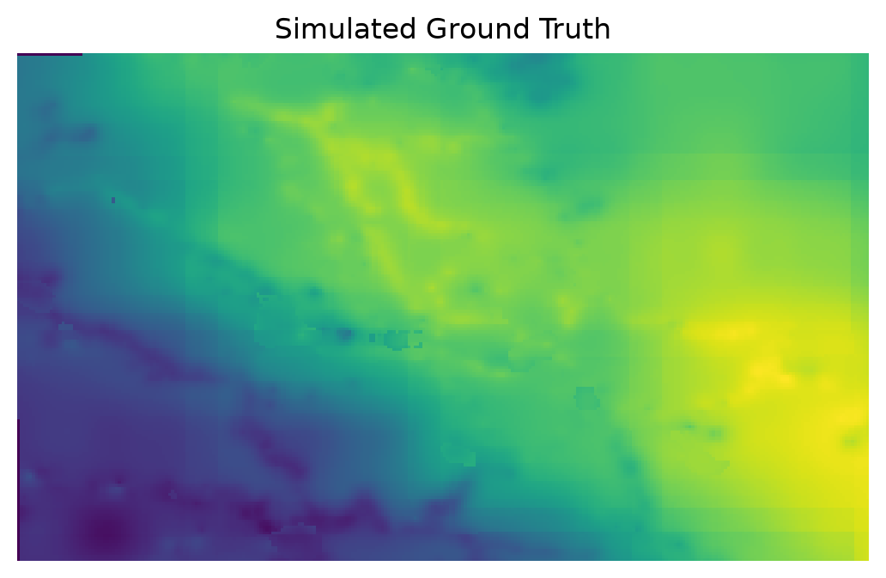
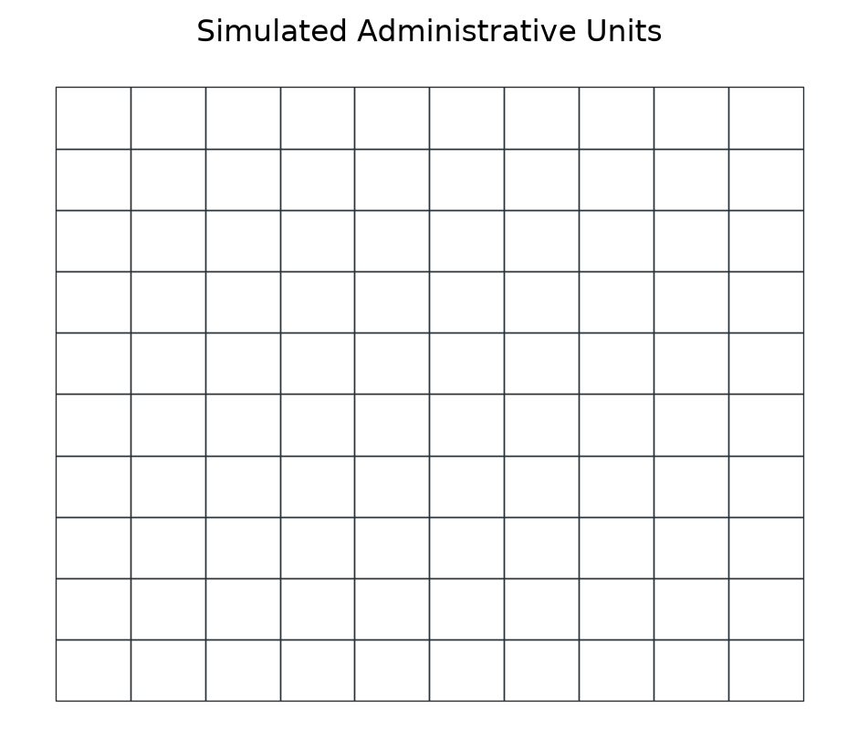
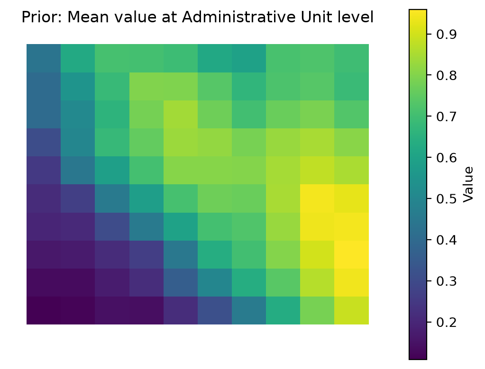
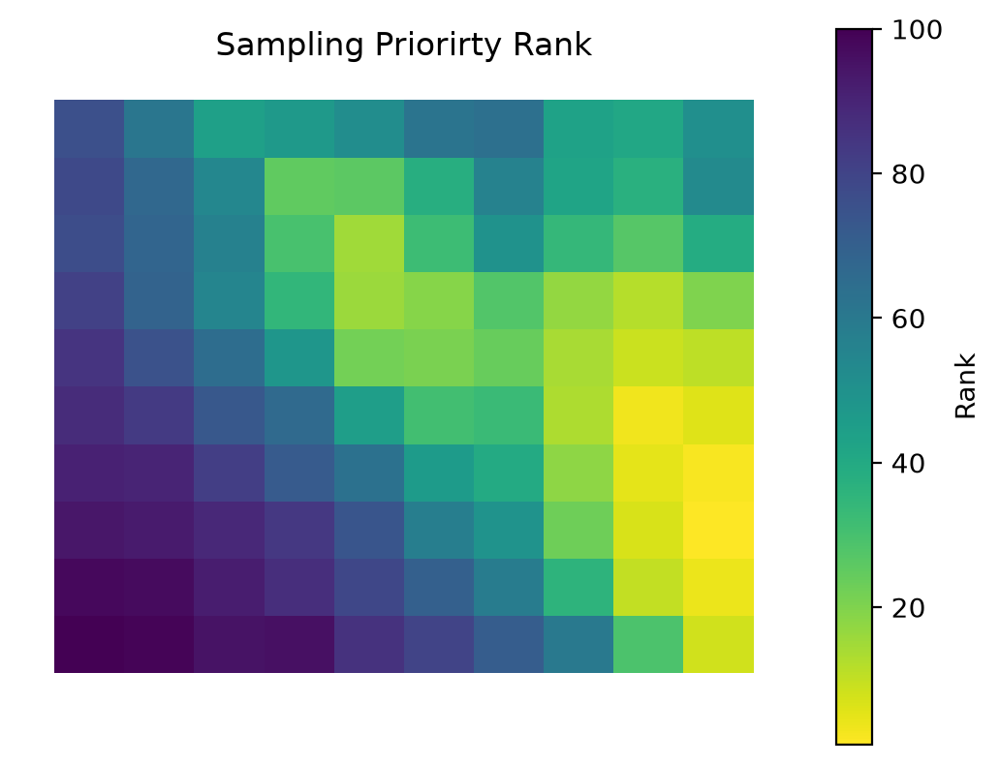
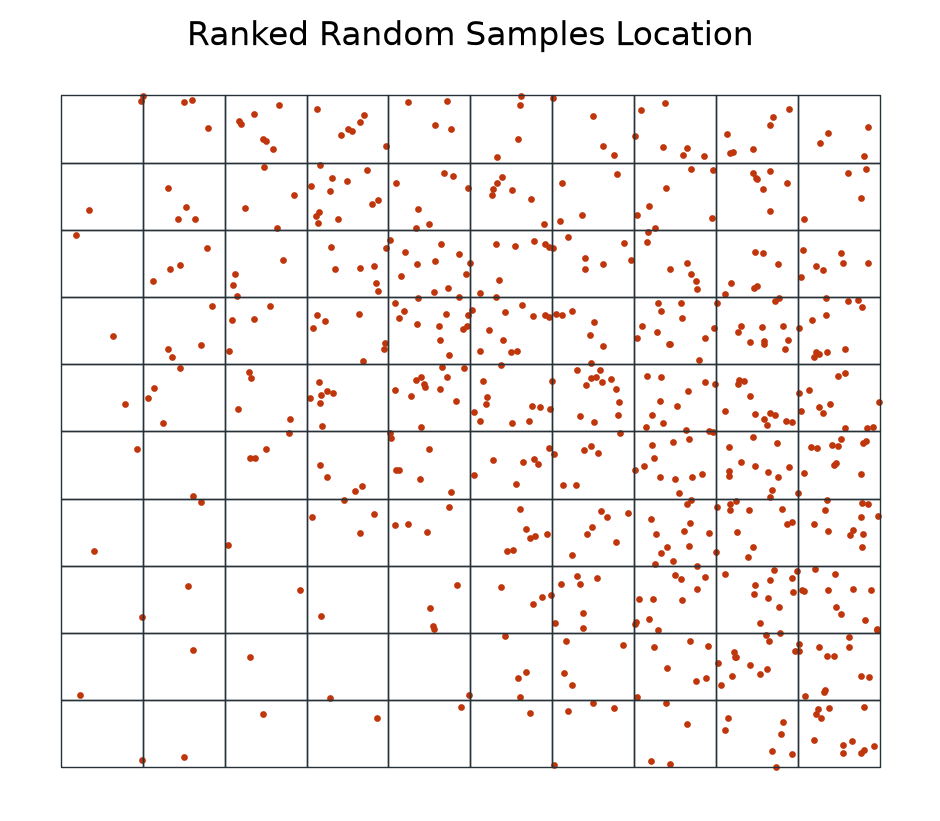
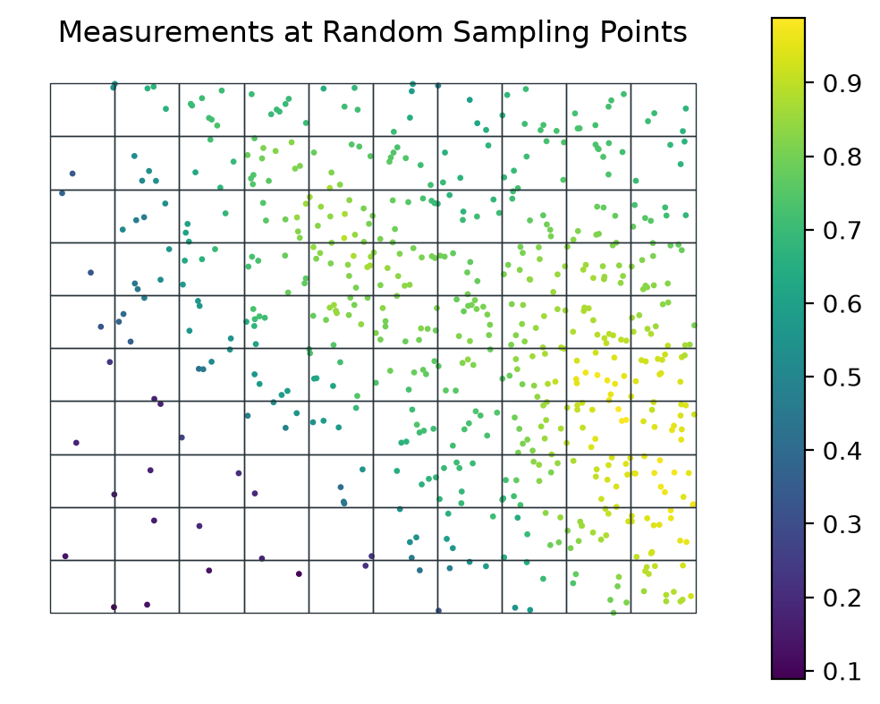
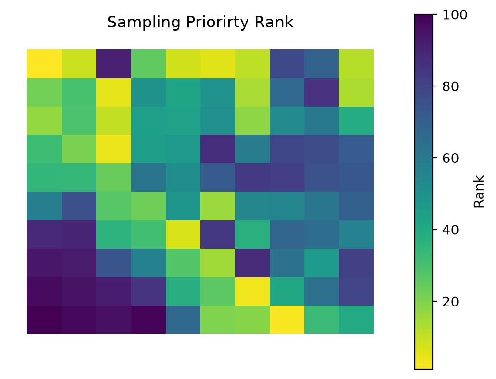
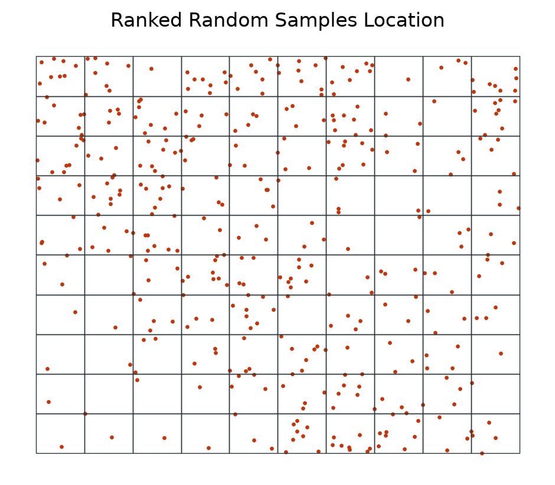
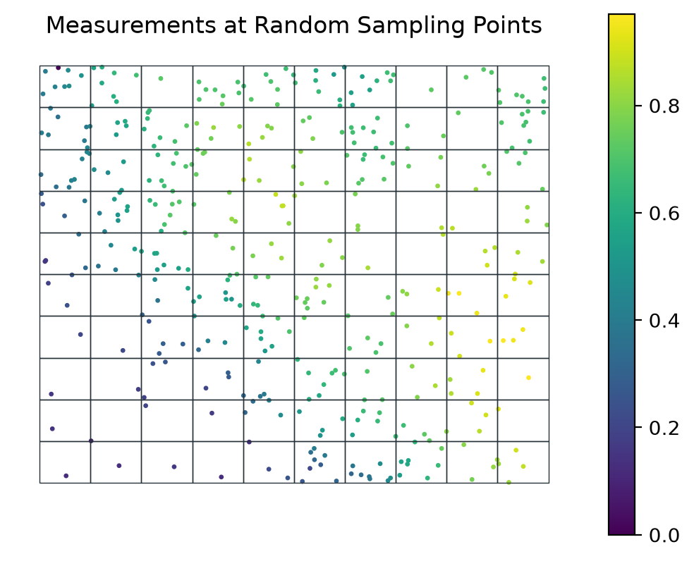
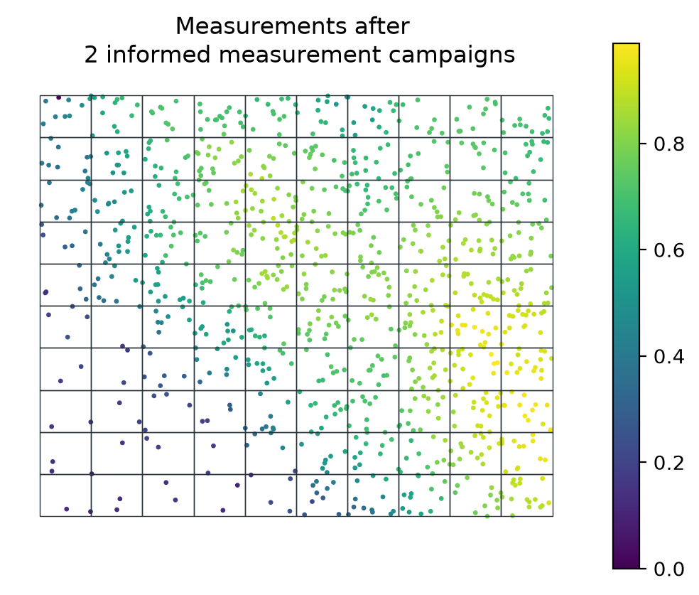

import matplotlib.pyplot as plt
import numpy as np
import pandas as pd
import rasterio
import geopandas as gpd
from trufl.utils import gridder
from trufl.sampler import Sampler, rank_to_sample
from trufl.collector import DataCollector
from trufl.callbacks import (State, MaxCB, MinCB, StdCB, CountCB, MoranICB, PriorCB)
from trufl.optimizer import Optimizer
red, black = '#BF360C', '#263238'Getting started
Plan two sampling rounds on a simulated contamination map
In this tutorial you plan two sampling rounds over a simulated map of soil contamination. The map is the ground truth. You emulate each field measurement by reading the value of the map at the sample location.
You work through these steps:
- Split the area into a 10 x 10 grid of simulated administrative units with
gridder. - In Round I, rank the units by sampling priority from prior knowledge alone, with
PriorCBand anOptimizer. - Split the sampling budget across the units by rank with
rank_to_sample. - Pick sample locations in each unit with a
Sampler, then emulate the measurements with aDataCollector. - In Round II, compute the state of each unit from those measurements and rank the units again.
Imports
Our simulated ground truth
The assumed ground truth reveals a typical spatial pattern of contaminant such as Cs137 after a nuclear accident for instance:
fname_raster = '../files/ground-truth-01-4326-simulated.tif'
with rasterio.open(fname_raster) as src:
plt.axis('off')
plt.imshow(src.read(1))
plt.title('Simulated Ground Truth')
Simulate administrative units
The sampling strategy will be determined on a per-grid-cell basis within the administrative unit. We define below a 10 x 10 grid over the area of interest:
gdf_grid = gridder(fname_raster, nrows=10, ncols=10)
gdf_grid.head()| geometry | |
|---|---|
| loc_id | |
| 0 | POLYGON ((-1.2083 43.2695, -1.2083 43.26042, -... |
| 1 | POLYGON ((-1.2083 43.27858, -1.2083 43.2695, -... |
| 2 | POLYGON ((-1.2083 43.28766, -1.2083 43.27858, ... |
| 3 | POLYGON ((-1.2083 43.29673, -1.2083 43.28766, ... |
| 4 | POLYGON ((-1.2083 43.30581, -1.2083 43.29673, ... |
Tip
Note how each administrative unit is uniquely identified by its loc_id.
gdf_grid.boundary.plot(color=black, lw=0.5)
plt.axis('off')
plt.title('Simulated Administrative Units');
Round I: Optimize sampling based on prior at \(t_0\)
What prior knowledge do we have?
At the initial time \(t_0\), data sampling has not yet begun, but we can often leverage existing prior knowledge of our phenomenon of interest to inform our sampling strategy/policy. In the context of nuclear remediation, this prior knowledge can often be obtained through mobile surveys, such as airborne or carborne surveys, which can provide a coarse estimation of soil contamination levels.
In the example below, we simulate prior information about the soil property of interest by calculating the average value of the property over each grid cell.
At this stage, we have no measurements, so we simply create an empty Geopandas GeoDataFrame.
samples_t0 = gpd.GeoDataFrame(index=pd.Index([], name='loc_id'),
geometry=None, data={'value': None})
Tip
We need to set an index loc_id and have a geometry and value columns.
Now we get/“sense” the state of our grid cells based on the simulated prior (Mean over each grid cell PriorCB):
state = State(samples_t0, gdf_grid, cbs=[PriorCB(fname_raster)])
# You have to call the instance
state_t0 = state(); state_t0.head()| Prior | |
|---|---|
| loc_id | |
| 0 | 0.108520 |
| 1 | 0.133123 |
| 2 | 0.161802 |
| 3 | 0.195281 |
| 4 | 0.213253 |
gdf_grid.join(state_t0, how='left').plot(column='Prior',
cmap='viridis',
legend_kwds={'label': 'Value'},
legend=True)
plt.axis('off')
plt.title('Prior: Mean value at Administrative Unit level');
Sampling priority ranks
benefit_criteria = [True]
optimizer = Optimizer(state=state_t0)
df_rank = optimizer.get_rank(is_benefit_x=benefit_criteria, w_vector = [1],
n_method=None, c_method = None,
w_method=None, s_method="CP")
df_rank.head()| rank | |
|---|---|
| loc_id | |
| 92 | 1 |
| 93 | 2 |
| 84 | 3 |
| 91 | 4 |
| 83 | 5 |
Tip
How trufl ranks areas explains how the Optimizer turns criteria and weights into ranks.
gdf_grid.join(df_rank, how='left').plot(column='rank',
cmap='viridis_r',
legend_kwds={'label': 'Rank'},
legend=True)
plt.axis('off')
plt.title('Sampling Priorirty Rank');
Informed random sampling
Tip
It’s worth noting that in the absence of any prior knowledge, a uniform sampling strategy over the area of interest may be used. However, this approach may not be the most efficient use of the available data collection and analysis budget.
Based on the ranks (sampling priority) calculated by the Optimizer and given sampling budget, let’s calculate the number of samples to be collected for each administrative unit (loc_id). Different sampling policies can be used (Weighted, Quantiles, …):
budget_t0 = 600
n = rank_to_sample(df_rank['rank'].sort_index().values,
budget=budget_t0, min=1, policy="quantiles"); narray([ 1, 1, 1, 1, 1, 1, 1, 1, 1, 1, 1, 1, 1, 1, 1, 4, 4,
4, 4, 4, 1, 1, 1, 1, 4, 4, 4, 4, 4, 7, 1, 1, 1, 4,
4, 7, 7, 7, 12, 7, 1, 1, 4, 4, 7, 12, 12, 12, 7, 4, 1,
4, 4, 7, 7, 12, 12, 7, 7, 4, 4, 4, 7, 7, 7, 12, 7, 7,
4, 4, 4, 7, 12, 12, 12, 12, 12, 7, 7, 7, 7, 12, 12, 12, 12,
12, 12, 7, 7, 7, 12, 12, 12, 12, 12, 12, 12, 7, 4, 4])We can now decide where to sample based on this sampling schema:
sampler = Sampler(gdf_grid)
sample_locs_t0 = sampler.sample(n, method='uniform')
print(sample_locs_t0.head())
ax = sample_locs_t0.plot(markersize=2, color=red)
gdf_grid.boundary.plot(color=black, lw=0.5, ax=ax)
plt.axis('off')
plt.title('Ranked Random Samples Location'); geometry
loc_id
0 MULTIPOINT ((-1.20846 43.26142))
1 MULTIPOINT ((-1.21991 43.27015))
2 MULTIPOINT ((-1.20838 43.28074))
3 MULTIPOINT ((-1.21735 43.28959))
4 MULTIPOINT ((-1.20944 43.30343))
Emulating measurement campaign
The data collector collects measurements at the random sampling locations in the field. In our case, we emulate this process by extracting measurements from the provided raster file.
“Measuring” variable of interest from a given raster:
dc_emulator = DataCollector(fname_raster)
measurements_t0 = dc_emulator.collect(sample_locs_t0)
print(measurements_t0.head())
ax = measurements_t0.plot(column='value', s=2, legend=True)
gdf_grid.boundary.plot(color=black, lw=0.5, ax=ax);
plt.axis('off')
plt.title('Measurements at Random Sampling Points'); geometry value
loc_id
0 POINT (-1.20846 43.26142) 0.089033
1 POINT (-1.21991 43.27015) 0.136715
2 POINT (-1.20838 43.28074) 0.154431
3 POINT (-1.21735 43.28959) 0.179844
4 POINT (-1.20944 43.30343) 0.228972
This marks the end of our initial measurement efforts, based on our prior knowledge of the phenomenon. Going forward, we can use the additional insights gained during this phase to enhance our future measurements.
Round II: Optimize sampling with additional insights at \(t_1\)
For each administrative unit, we now have additional knowledge acquired during the previous campaign, in addition to our prior knowledge. In the current round, the optimization of the sampling will be carried out based on the maximum, minimum, standard Deviation, number of measurements already conducted, our prior knowledge, and an estimate of the presence of spatial trends or spatial correlations (Moran’s I).
Tip
It’s worth noting that you can use any quantitative or qualitative secondary geographical information as a variable in the state, such as population, whether any previous remediation actions have taken place, the economic impact of the contamination, and so on.
Getting administrative units new state
state = State(measurements_t0, gdf_grid, cbs=[
MaxCB(), MinCB(), StdCB(), CountCB(), MoranICB(k=5), PriorCB(fname_raster)])state().head()| Max | Min | Standard Deviation | Count | Moran.I | Prior | |
|---|---|---|---|---|---|---|
| loc_id | ||||||
| 0 | 0.089033 | 0.089033 | 0.0 | 1 | NaN | 0.108520 |
| 1 | 0.136715 | 0.136715 | 0.0 | 1 | NaN | 0.133123 |
| 2 | 0.154431 | 0.154431 | 0.0 | 1 | NaN | 0.161802 |
| 3 | 0.179844 | 0.179844 | 0.0 | 1 | NaN | 0.195281 |
| 4 | 0.228972 | 0.228972 | 0.0 | 1 | NaN | 0.213253 |
Tip
The Moran’s I index is a statistical method used to determine if there is a spatial correlation/trend within each area of interest. For example, a random field would have a Moran’s I index close to 0, while a clear gradient of low to high values, such as from south to north, would be characterized by a Moran’s I index close to 1.
Finding optimal number of samples to be collected
- We first decide if each variable of the State are to maximize (benefit) or minimize (cost):
benefit_criteria = [True, True, True, False, False, True]- Then assign an importance weight to each of the variable of the
State(Min,Max, …):
optimizer = Optimizer(state=state())
df_rank = optimizer.get_rank(is_benefit_x=benefit_criteria,
w_vector = [0.2, 0.1, 0.1, 0.2, 0.2, 0.2],
n_method="LINEAR1", c_method=None, w_method=None, s_method="CP")gdf_grid.join(df_rank, how='left').plot(column='rank',
cmap='viridis_r',
legend_kwds={'label': 'Rank'},
legend=True)
plt.axis('off')
plt.title('Sampling Priorirty Rank');
df_rank.head()| rank | |
|---|---|
| loc_id | |
| 9 | 1 |
| 70 | 2 |
| 61 | 3 |
| 26 | 4 |
| 28 | 5 |
Based on this rank we can again: 1. based on the ranks (sampling priority) and given sampling budget, calculate the number of samples to be collected for each administrative unit and carry out random sampling; 2. perform the random sampling; 3. and carry out the measurements.
Informed random sampling
budget_t1 = 400
n = rank_to_sample(df_rank['rank'].sort_index().values,
budget=budget_t1, min=1, policy="quantiles"); narray([1, 1, 1, 1, 3, 4, 4, 8, 8, 8, 1, 1, 1, 1, 1, 4, 8, 4, 4, 8, 1, 1,
3, 4, 4, 8, 8, 8, 8, 1, 1, 1, 3, 4, 8, 3, 4, 4, 4, 8, 3, 4, 4, 8,
4, 3, 4, 4, 4, 8, 8, 4, 8, 1, 8, 3, 1, 3, 4, 8, 8, 8, 1, 4, 3, 1,
3, 8, 8, 8, 8, 4, 3, 3, 3, 1, 1, 3, 3, 1, 4, 3, 4, 3, 3, 3, 1, 3,
1, 3, 4, 1, 1, 3, 3, 3, 3, 4, 8, 8])sampler = Sampler(gdf_grid)
sample_locs_t1 = sampler.sample(n, method='uniform')
ax = sample_locs_t1.plot(markersize=2, color=red)
gdf_grid.boundary.plot(color=black, lw=0.5, ax=ax)
plt.axis('off')
plt.title('Ranked Random Samples Location');
Second measurement campaign
dc_emulator = DataCollector(fname_raster)
measurements_t1 = dc_emulator.collect(sample_locs_t1)
ax = measurements_t1.plot(column='value', s=2, legend=True)
gdf_grid.boundary.plot(color=black, lw=0.5, ax=ax);
plt.axis('off')
plt.title('Measurements at Random Sampling Points');
measurements_sofar = pd.concat([measurements_t0, measurements_t1])
ax = measurements_sofar.plot(column='value', s=2, legend=True)
gdf_grid.boundary.plot(color=black, lw=0.5, ax=ax);
plt.axis('off')
plt.title('Measurements after \n 2 informed measurement campaigns');